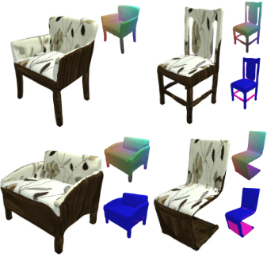
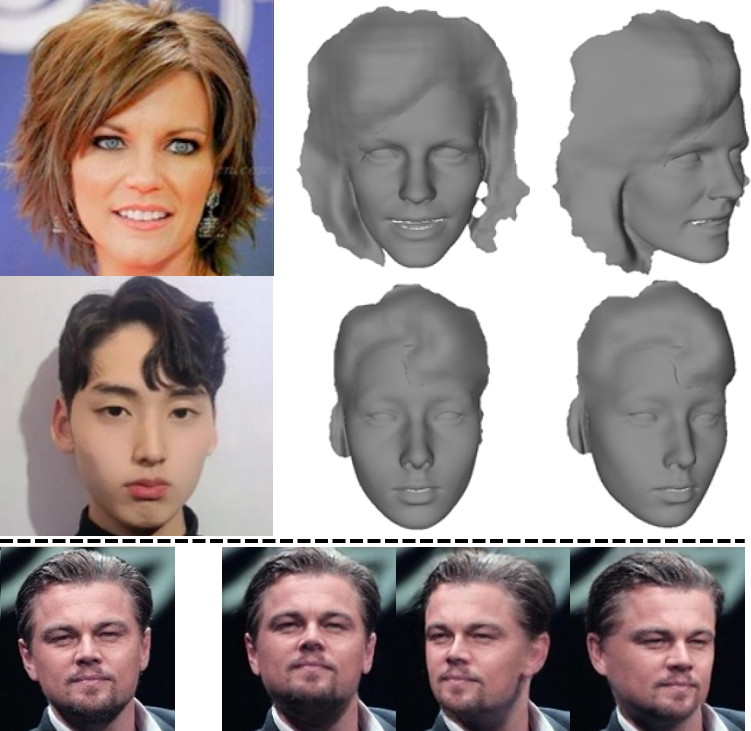

GRAM: Generative Radiance Manifolds for 3D-Aware Image Generation Yu Deng, Jiaolong Yang, Jianfeng Xiang, Xin Tong
2022 IEEE Conference on Computer Vision and Pattern Recognition, CVPR 2022,
[PDF][Project][BibTeX]
We propose Generative Radiance Manifolds (GRAM), a method that can generate 3D-consistent images with explicit camera control, trained on only unstructured 2D images.

Deformed Implicit Field: Modeling 3D Shapes with Learned Dense Correspondence Yu Deng, Jiaolong Yang, Xin Tong
2021 IEEE Conference on Computer Vision and Pattern Recognition, CVPR 2021,
[PDF][Code][BibTeX]
We propose a novel Deformed Implicit Field (DIF) representation for modeling 3D shapes of a category and generating dense correspondences among shapes with structure variations.
Disentangled and Controllable Face Image Generation via 3D Imitative-Contrastive Learning Yu Deng, Jiaolong Yang, Dong Chen, Fang Wen, Xin Tong
2020 IEEE Conference on Computer Vision and Pattern Recognition, CVPR 2020,
Oral Presentation [PDF][Code][BibTeX]
We propose DiscoFaceGAN, an approach for face image generation of virtual people with disentangled, precisely-controllable latent representations for identity, expression, pose, and illumination.

Deep 3D Portrait from a Single Image
Sicheng Xu, Jiaolong Yang, Dong Chen, Fang Wen, Yu Deng, Yunde Jia, Xin Tong
2020 IEEE Conference on Computer Vision and Pattern Recognition, CVPR 2020,
[PDF][Code][BibTeX]
We propose a learning-based approach for recovering the 3D geometry of human head from a single portrait image without any ground-truth 3D data.
Accurate 3D Face Reconstruction with Weakly-Supervised Learning: From Single Image to Image Set Yu Deng, Jiaolong Yang, Sicheng Xu, Dong Chen, Yunde Jia, Xin Tong
2019 IEEE Conference on Computer Vision and Pattern Recognition Workshop on AMFG, CVPRW 2019,
Best Paper Award [PDF][Code][BibTeX]
We propose a novel deep 3D face reconstruction approach that leverages a robust hybrid loss function and performs multi-image face reconstruction by exploiting complementary information from different images for shape aggregation.
{kind=link}